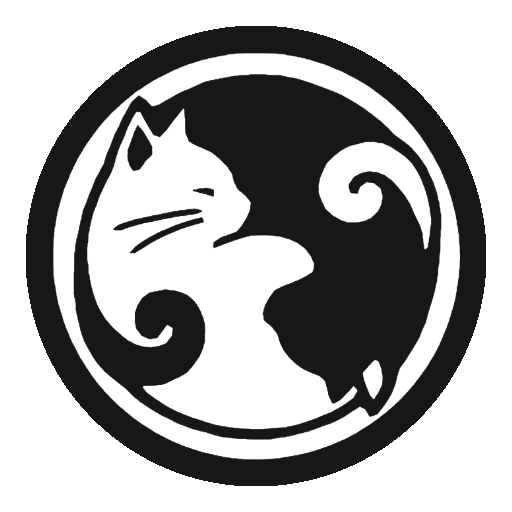

<header>
  <input id="nav-toggle" type="checkbox">
  
  <ul class="links">
    <li><a [routerLink]="['./votes']">Aller voter !</a></li>
    <li><a [routerLink]="['./results']">Consulter les résultats</a></li>
    <button type="button" class="button" (click)="reinitVotes()">Réinitialiser vos votes</button>
  </ul>
  <label for="nav-toggle" class="icon-burger">
    <div class="line"></div>
    <div class="line"></div>
    <div class="line"></div>
  </label>
</header>
